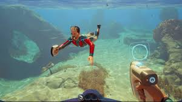
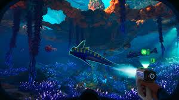
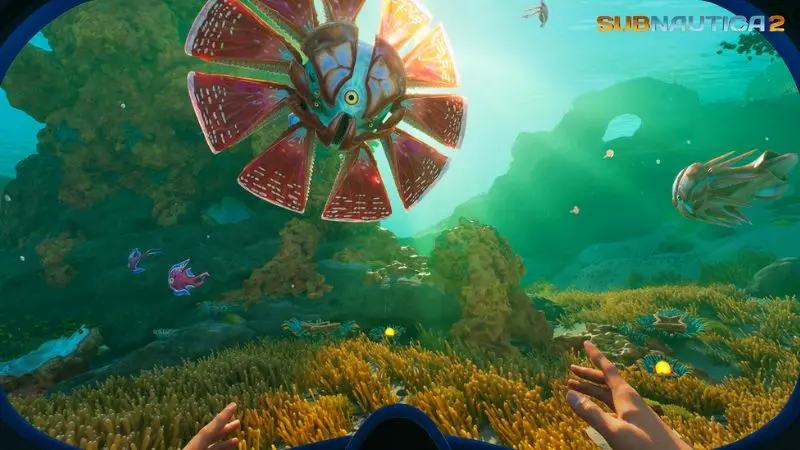

Subnautica 2
Subnautica 2 es un videojuego de supervivencia, exploración y aventura submarina ambientado en un nuevo planeta oceánico alienígena llamado Cesura. Desarrollado por Unknown Worlds, la mayor novedad de esta entrega es la introducción del multijugador cooperativo opcional para hasta 4 jugadores, además de la clásica experiencia en solitario.
Unknow Worlds
Unknown Worlds es una compañía americana independiente de desarrollo de videojuegos, con sede en San Francisco, California. El estudio es más conocido por las series Natural Selection y Subnautica.
Ryley Robinson
Riley Robinson, o simplemente Riley, es el principal protagonista y personaje jugable de Subnautica. Él fue el único sobreviviente del desastre de la Aurora, logrando escapar de la nave en la Cápsula Salvavidas 5. Al principio, él trabajaba con la corporación Alterra, como Jefe de Mantenimiento de Sistemas No Esenciales, es decir, en el área de ingeniería.
Marguerit Maida
Marguerit Maida era una mercenaria con gran experiencia y antigua miembro de la Federación Transsistémica, contratada por Paul Torgal para proteger a los degasi de las incursiones piratas.



